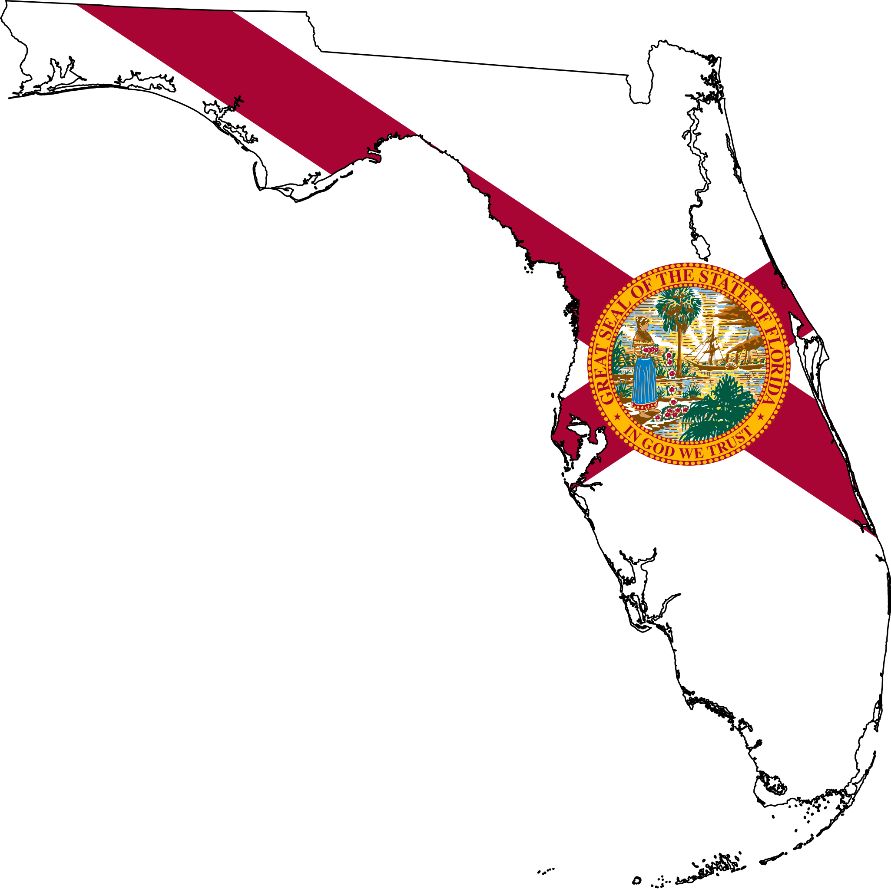
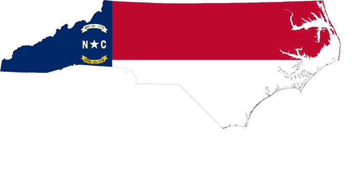

Florida
Out of all of the 50 states, Florida has seen the second most population growth due to large amounts of migration from other states. Although some argue that people are simply moving to florida for the nicer weather, Florida specifically gained a majority of their new residents over the COVID pandemic. Differences in COVID policy caused people to mass migrate to Florida, which at the time had looser COVID restrictions than most of the other states besides South Dakota. From July 1, 2021 to July 1, 2022 alone, Florida gained 417,000 new people, even though the COVID issue is essentially no longer relavant. Some other reasons that Florida is still gaining residents are:
- No State Income Taxes
- A Strong Economy
- Low Costs of Living
- Theme Parks and Entertainment
- Wildlife, Beaches, and State Parks
- Strong Educational Opportunities
Texas

Similarly to Florida, Texas has also gained many new residents due to the COVID pandemic, and also like Florida Texas has continued to gain residents even after the COVID issue ended. It is estimated that from 2021 to 2022, Texas gained over 470,000 new residents. Now there are a variety of reasons that Texas is currently the fastest growing state in the nation, including COVID policies and warmer weather (like Florida), but the most important reason is the low corporate tax rate. As places like California become more and more expensive for businesses to operate out of, more corporations have moved to more republican southern states that have lower corporate tax rates. Texas happens to have one of the lowest in the nation and has caused many companies like Tesla, AT&T, and Exxon-Mobil to relocate their company along with their employees to Texas. Some other reasons that Texas is gaining residents are:
- No State Income Taxes
- Low Costs of Living
- Strong Higher Education
- Great Infrastructure
- Cheap Electicity and Gas
- Job Opportunities
Arizona

Similarly to the rest of the states on this list gaining population, people having been moving to Arizona because of the warm weather and lower taxes. Corporations have also moved a lot of their businesses to Arizona because of the low corporate taxes and cheap migration costs, since most of these companies come from California and Arizona shares a state border with California. A lot of California residents are essentially fleeing from California into Arizona because they can no longer afford housing or basic necessities because of horrendous crime policies and high taxes. Arizona has cheaper, more affordable housing then places like California, Oregon, and Washington, which is where most of their newer residents are moving from. It is estimated that from 2021 to 2022, Arizona gained about 100,000 new residents. Some other reasons that Arizona is gaining residents are:
- National Parks
- Excellent Local Schools
- Newer Infrastructure
- Safe Environment
- Low Costs of Living
- Abundant Renewable Energy
North Carolina
North Carolina seems like the odd man out because unlike the rest of the states people are moving to, North Carolina does not particularly have hot summertime weather year round. North Carolina tends to have relatively warm weather, but not always. North Carolina represents the perfect middleman for people moving from more northern states like New York and Pennsylvania where the weather isn't painstakingly hot or bitter cold, it's somewhere in between. Besides the climate, North Carolina attracts a lot of new residents because of their growing suburbs and strong economic growth in the state over the last few years. It is estimated that from 2021 to 2022, North Carolina attracted about 140,000 new residents. Some other reasons that North Carolina is gaining residents are:
- Easily Accessible Health Care
- Excellent Local and State Schools
- Diverse Food Choices
- Nature and Wildlife
- Moderate Politics
Georgia
Georgia, similarly to Florida, is one of the fastest growing states in the nation because of their COVID policies. Governor Brian Kemp was the second governor in the nation to lift the mask mandates and lockdown policies similarly to Ron Desantis in Florida. Although they were not nearly as relaxed as Florida's policies, many people across the country moved to Georgia to enjoy more freedom and experience Georgia. It is estimated that from 2021 to 2022, Georgia gained about 120,000 new residents from other states. Even before COVID hit, Georgia was experiencing a rapid gain of residents because of a multitude of different reasons. Some of these other reasons that Georgia is gaining residents include:
- Low Crime Rates
- Great Weather
- Low Costs of Living
- Low Corporate Taxes
- Diverse State Topographies
- Strong Economic Performances
- Job Opportunities
- Excellent Lower and Higher Education